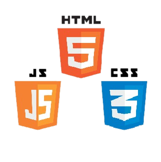
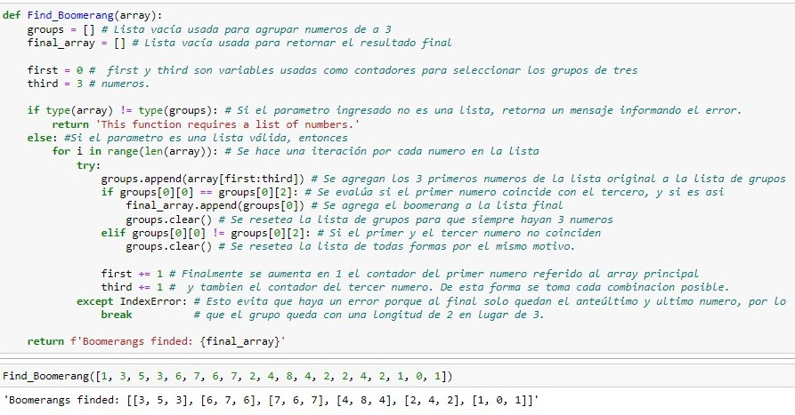
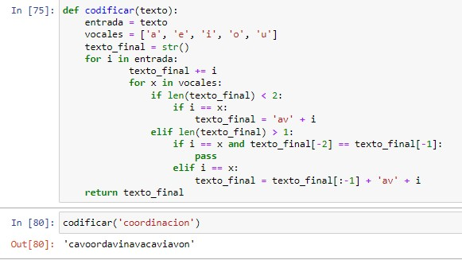
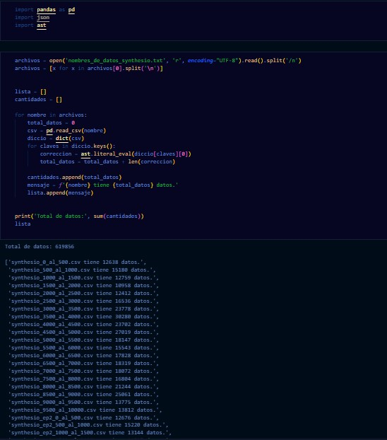
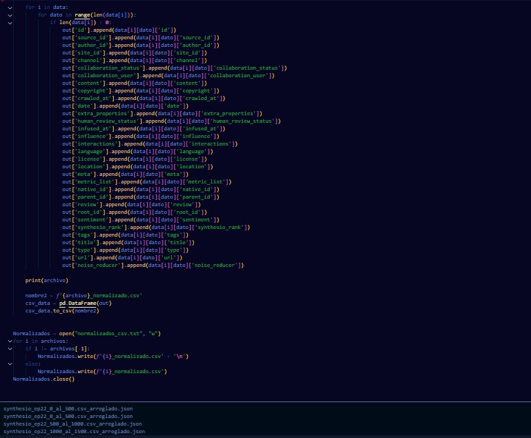

Sobre mi
Comencé en el mundo de la programación por curiosidad. Realicé proyectos de Desarrollo Web, Data Science y API's por lo que tengo experiencia trabajando con diferentes tecnologías.

A lo largo del primer año en el mundo IT, experimenté y mejoré mis habilidades con HTML y CSS diseñando varias páginas estáticas y/o dinámicas agregando un poco de JavaScript.

Python es el lenguaje principal en el que me manejo, y tambien trabaje con sus frameworks Django y Flask, para desarrollar paginas web dinamicas con CRUD a bases de datos relacionales (SQL).
Mis proyectos

Algoritmo para encontrar capicúas

Desafío de Codificador de texto

Prototipo Blockchain

Related Queries Pytrends

Algoritmo para contabilizar datos de un CSV
